Five A.M.
Five in the morning, a silent kitchen, the first quiet minutes before a long study session. Every sound of the ritual with Red Bull Sugarfree, from frost to the crack to the fizz, heard up close.
Sound and texture stop the scroll and hold it (reported hold rates around 43% on ASMR foley ads): the viewer leans in, and every second of attention is spent on the product itself. Sensory detail sells the experience the viewer cannot taste or touch (the cold, the crack, the fizz). It fails when it is only pretty: the sequence must end in the use moment and a clear pack shot.
Contact sheet
One keyframe per shot, with the caption as it will appear.
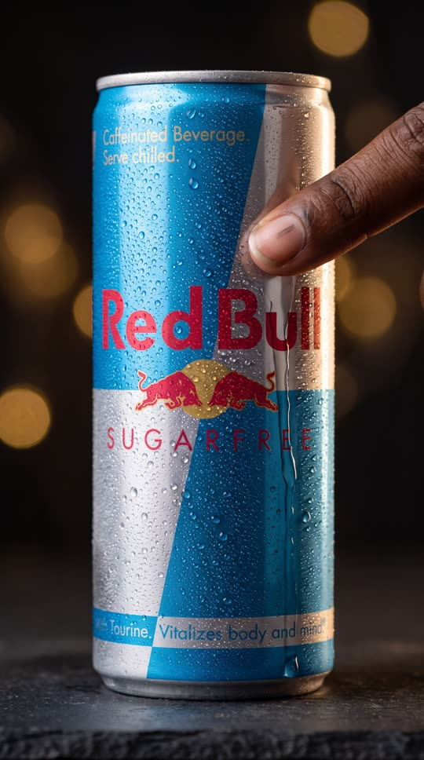
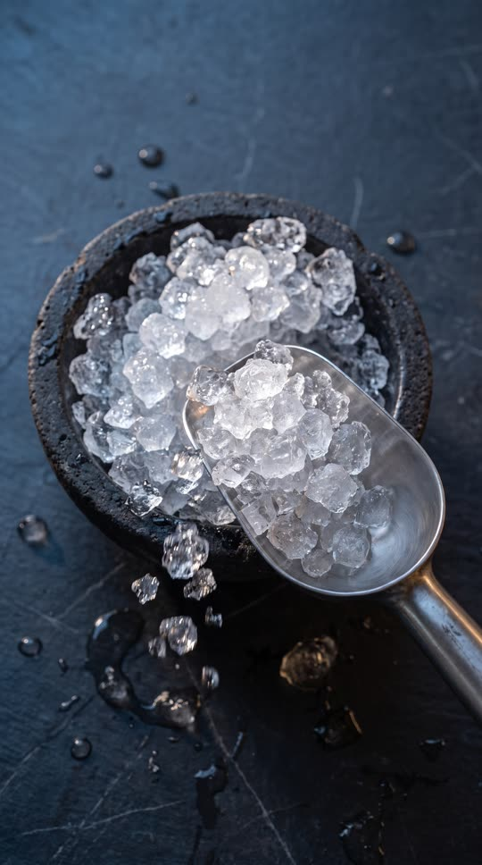
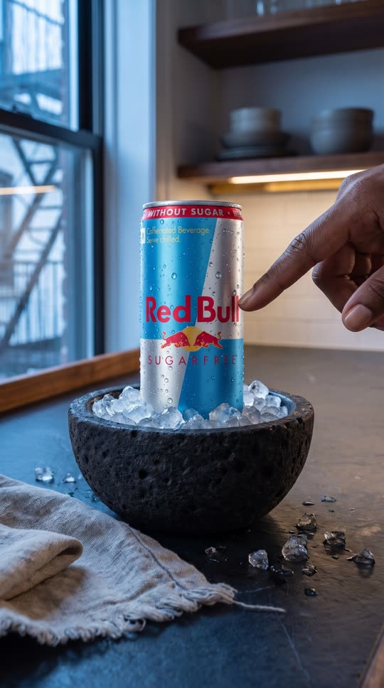
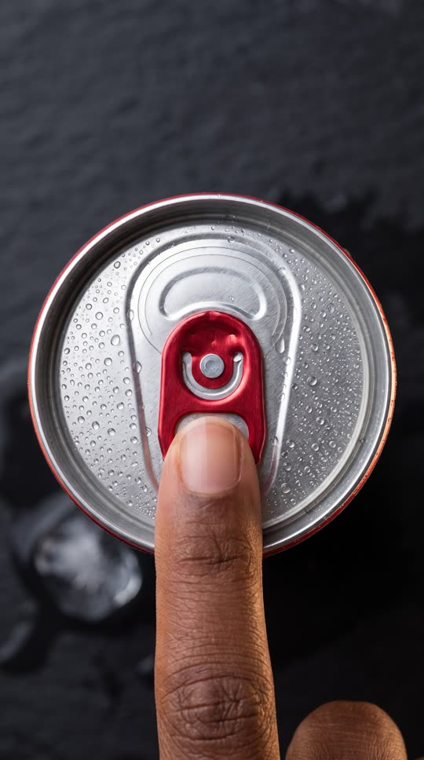
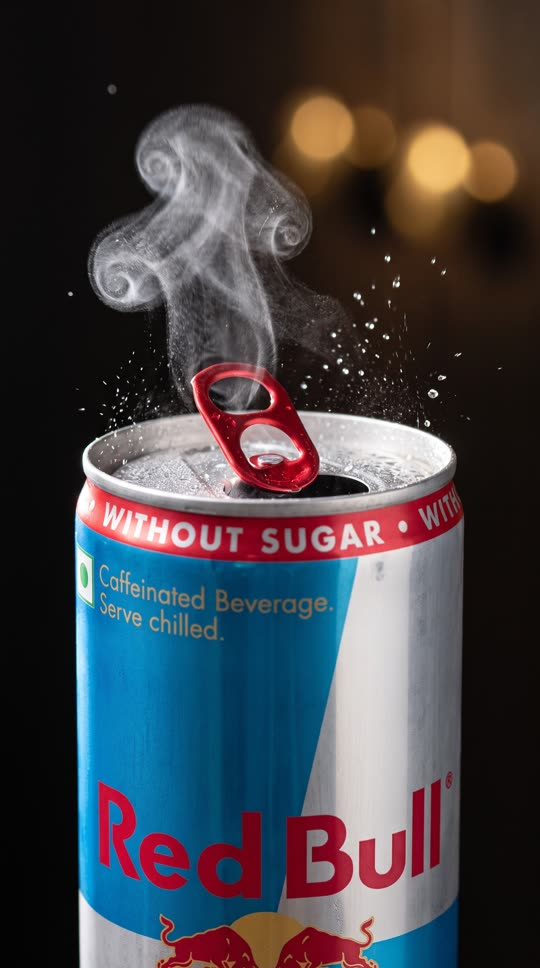


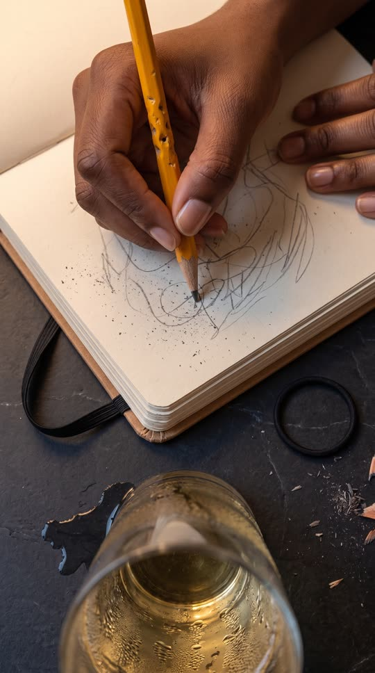
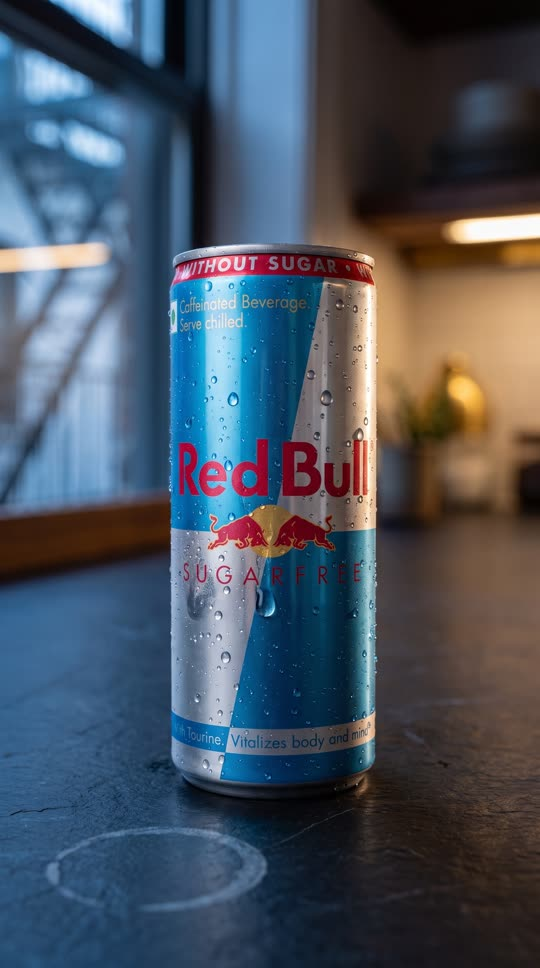
Cast and world
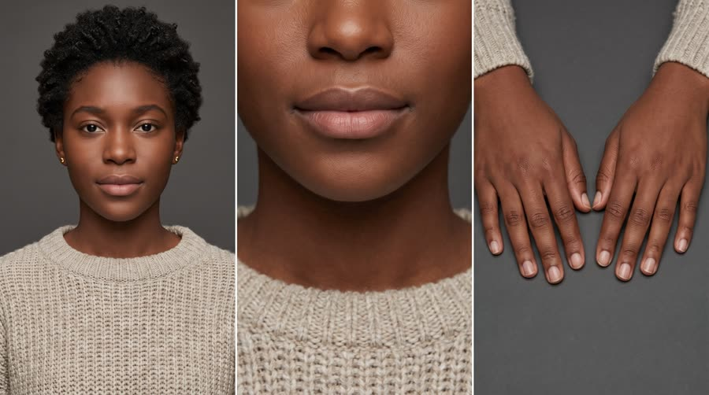
Voice: soft close whisper, warm, American, unhurried
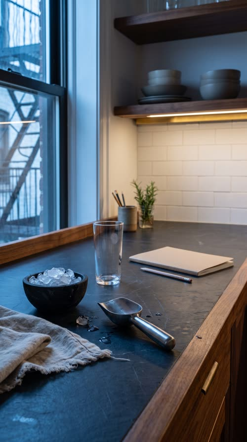
World. A dark walnut kitchen counter with a slate top at 5am, a window of cool blue pre-dawn light to one side, one warm under-cabinet light, a notebook and pencil waiting at the end of the counter. Palette. Dark walnut, black slate and cool pre-dawn blue, so the can's sky blue, silver and red carry all the colour; the warm under-cabinet light is the one accent.
Fictional brands. Aldercroft (the plain notebook, blank cover)
World bible
Fixed with the concept: the lore, the objects and the textures that make this world specific. Only product-adjacent props change per product.
- Imani Brooks is a second-year public health grad student renting the top floor of a 1920s brick row house in West Philadelphia. Her qualifying exam is in six days.
- The counter is a salvaged walnut slab from a closed neighbourhood bakery, topped with a honed black slate board; she oils the walnut every Sunday and the slate still carries a pale water ring from the first week.
- She has kept the same ritual for 41 mornings in a row: 5am, one can over crushed ice, one page of pencil notes before the sun comes up. The notebook is the fifth Aldercroft notebook this semester.
- The basalt ice bowl was her grandmother's; it is rough and pitted outside and polished smooth inside from decades of use.
- The radiator knocks twice at 5:03 every morning; that is her cue to open the can.
Wear and time. 5:02am on a Wednesday in February, dark outside with the first pre-dawn blue, frost at the window edges. Used: the notebook is half full, the pencil worn to half length, a faint water ring on the slate. Out of place: a single loose ice crystal melting on the slate, a hair tie left by the notebook.
Signature objects
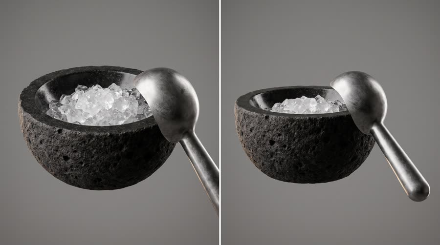
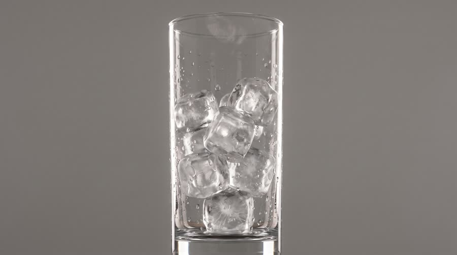
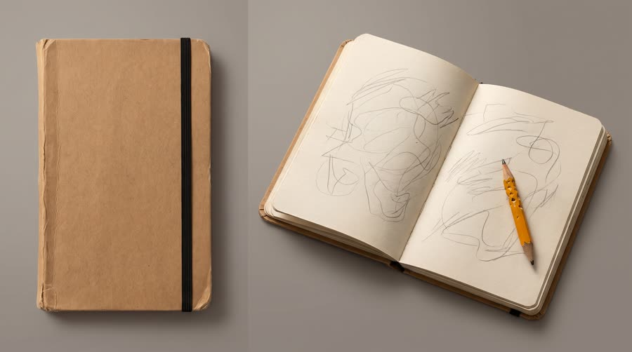
Set dressing by location
Foreground
honed black slate with fine hairline scratches and a faint pale water ring; the small black basalt bowl of crushed ice, rough and pitted outside, polished inside; a polished steel ice scoop with a worn satin handle; a folded oatmeal linen tea towel with one frayed corner; a few loose glittering ice crystals melting into tiny beads on the slate
Midground
an empty tall thin-walled clear glass with a faint fingerprint near the rim; a closed notebook with a blank kraft cover and a black elastic band, a half-length pencil with tooth marks lying on it; a small handmade stoneware cup holding more worn pencils; the oiled walnut edge of the counter with warm straight grain and one old knife nick; a sprig of rosemary in a small glass jar of water
Background
a tall window with old wavy glass and cool blue pre-dawn light, the dark silhouette of a fire escape outside; a warm brass under-cabinet light strip glowing at the back; a white subway-tile backsplash with grey grout lines; open walnut shelves with stacked matte stoneware bowls; a black cast-iron pan hanging from a hook, softly out of focus
- Imani: small plain gold stud earrings; an oversized oatmeal knit sweater with a pulled thread at the right cuff; a black hair tie on her left wrist; a half-length pencil with tooth marks near the end; short natural unpainted nails with a faint graphite smudge on her little finger
- Aldercroft: a small embossed leaf shape blind-debossed in the kraft cover, kraft brown and black. On: the notebook cover only. Text in post: none
a fingertip squeaking through condensation on aluminium; crushed ice shifting and tinkling in a stone bowl; the steel scoop scraping stone; a nail flick on the ring pull, then the crack and hiss; fizz popping at the opening; ice cracking as the pour hits it; the radiator knocking twice far away; pencil graphite scratching on paper
Beats
| Time | Beat | What happens |
|---|---|---|
| 0-2.2 | hook | Silence, then a fingertip drags a slow squeaking line through the frost on the can. A whisper: listen. |
| 2.2-7 | setup | The ritual: a steel scoop through crushed ice, the can settled into the ice, two soft taps on the full can. |
| 7-13.6 | product | The hero sound: a nail under the tab, half a second of silence, the crack, the mist, the fizz up close. |
| 13.6-19.4 | build | The pour over clear ice, cubes crackling, bubbles rising in slow motion. |
| 19.4-26 | payoff | One sip, a soft exhale, the brand whispered; then the pencil starts scratching: the study session begins. |
| 26-30 | cta | The can alone on the slate, one drop rolling down; the tagline whispered. |
Screenplay
12 spoken words in 30 s. Each line keeps its intent (fixed in the template) and its wording (written for this product).
| Time | Speaker | Line | Intent (template) |
|---|---|---|---|
| 0.6-1.8 | Imani (off camera) | Shh. Listen. barely there whisper, close to the mic, a smile in it | Hook: invite the viewer to lean in and listen. |
| 20.2-22.2 | Imani (off camera) | Red Bull Sugarfree. soft whisper after the exhale, each word placed · Say: RED BULL SHUG-er-free, three clear whispered words | Product line: name the product in a whisper, nothing else. |
| 23.0-25.0 | Imani (off camera) | Stay sharp. No sugar. whisper, slightly brighter, as the pencil starts | The one benefit this moment needs, using an allowed claim only. |
| 27.2-29.4 | Imani (off camera) | Wiiings without sugar. slow whisper, stretched vowel, trailing off · Say: WINGS, stretch the vowel slightly | Tagline in the brand's own words. |
Generation plan
U1 · 0 to 7.0 s · 7 s generation
Shots S01, S02, S03 · References: product can official, imani card, counter plate, S01 keyframe as first frame
9:16 ASMR macro film, dark walnut and slate kitchen at 5am, ultra-crisp 100mm macro, soft low side light. Shot 1 (0 to 2.2 s): extreme macro, one fingertip of @Image2 drags slowly down through the frost on the silver half of the exact can from @Image1, leaving a clean line, beads merging. Shot 2 (2.2 to 4.6 s): top-down, a steel scoop plunges into the stone bowl of crushed ice from @Image3 and lifts, crystals tumbling. Shot 3 (4.6 to 7 s): slow slider, the can nested upright in the ice, full label to camera, a fingertip taps it twice. The can keeps its exact shape and label. Native close-mic sound: silence floor, the wet squeak of skin on cold aluminium, a drop on slate, the crunch of the scoop, ice tinkling, two dull taps. No speech. No music. No text.
U2 · 7.0 to 19.4 s · 13 s generation
Shots S04, S05, S06, S07, S08 · References: product can official, imani card, counter plate, S04 keyframe as first frame
9:16 ASMR macro film, dark background, backlit droplets. Shot 1 (0 to 2.4 s): extreme macro top-down, a short natural nail of @Image2 slides under the red tab of the exact can from @Image1, stillness. Shot 2 (2.4 to 4.4 s): side-on at the opening, the tab lifts, the seal cracks, a small puff of cold mist, droplets jump, slow motion. Shot 3 (4.4 to 6.6 s): looking into the opening, fine bubbles fizzing on pale golden liquid, slow rack focus. Shot 4 (6.6 to 9.6 s): the can tilts in from above and pours a pale golden stream into a tall glass of clear ice, label to camera, slow motion. Shot 5 (9.6 to 13 s): through the glass, bubbles rising past ice, a crack runs through a cube. One can, one glass. Native close-mic sound: nail click, half a second of silence, the sharp crack and hiss, the fizz crackle, the pour, ice cracking and shifting, bubbles ticking on glass. No speech. No music. No text.
U3 · 19.4 to 22.6 s · 4 s generation · exact-risk (short, cheap to re-roll)
Shots S09 · References: product can official, imani card, counter plate, S09 keyframe as first frame
9:16 ASMR close-up, pre-dawn window light and a warm under-cabinet glow. @Image2 seen only from the nose down in an oatmeal sweater lowers a tall glass of pale golden drink from her lips after one small sip and exhales softly; in sharp focus in front of her the exact can from @Image1 stands upright and open on the slate, label facing camera and undistorted, it does not move. Native close-mic sound: a soft sip, ice clinking, a quiet exhale. No speech (the whisper is added in post). No music. No text.
U4 · 22.6 to 30 s · 8 s generation · exact-risk (short, cheap to re-roll)
Shots S10, S11 · References: product can official, imani card, counter plate, S10 keyframe as first frame
9:16 ASMR macro. Shot 1 (0 to 3.4 s): top-down, the hand of @Image2 starts writing in a notebook with a pencil in fast even strokes, the marks are soft unreadable scribble shapes, the sweating glass at the frame edge. Shot 2 (3.4 to 8 s): locked pack shot, the exact can from @Image1 alone and upright on the black slate, full label to camera, one drop of condensation rolls down the silver half; one slow rack focus; empty dark space above the can. The can does not move or change. Native close-mic sound: pencil graphite scratching, a page corner lifting, ice settling, one drop tapping the slate, room tone. No speech. No music. No text.
Sound, music, voice, captions
| 0 to 26.0 s | silence | No music. The foley is the score: room tone floor at about minus 50 dB so every sound sits in space. |
| 26.0 to 30 s | afterglow | Optional: one barely audible warm synth pad chord (F major, soft attack) under the tagline, mixed below the drop sound, rings out past the last frame. |
Added sound
- 10.0 s: can crack and hiss, close-mic (the hero sound of the whole ad; layer a clean recorded crack if the native one is soft or late)
- 17.6 s: thermal ice crack (the second signature trigger that pays off the pour; add if the native crack does not register)
- Imani: close breathy whisper as one TTS track in post (units carry no speech); brand line uses the phonetic RED BULL SHUG-er-free and sits over the short exact risk unit U3; whispers never overlap a hero sound
font: Inter Light, size: 3.8% of frame height, color: #F4F1EA at 92% opacity, active word: fades in word by word over 6 frames, no colour change, shadow: very soft 0 1px 10px rgba(0,0,0,.55), position: centre, 80% down the frame, well clear of the macro action, max words on screen: 3, box: False, case: lowercase, letter spacing: 0.04em, motion: fade in 6 frames, hold, fade out 8 frames, never pops
Post text- 26.6 to 30 s: Red Bull Sugarfree / Wiiings without sugar (Inter Light, #F4F1EA, lowercase tagline under a small uppercase product name with 0.2em tracking, centred in the empty dark space above the can, 10 frame fade)
Adaptation contract
How this same concept takes any physical product.
| Product type | Where it sits in the story | Scale |
|---|---|---|
| ingested | the crack, the fizz and the pour over ice, then the first sip | macro, hand |
| applied | the cap twist, the pump, the product spreading on skin, the sound of it absorbing | macro, hand |
| worn | the zip, the fabric brush, the clasp click, the sound of it settling on | macro, body |
| handheld | the case snap, the button click, the power-on chime, the tactile grip | macro, hand |
| carried | the zip opening, the leather creak, the magnetic flap snapping shut | macro, hand to lap |
| home | the switch click, the fabric fluff, the warm hum as it comes on | macro, room |
| consumable | the refill clicking into place, the seal peel, the first pour | macro, hand |
Style bible
Look. Macro and extreme close-up only, 1 to 3 subjects per frame, one tactile action per shot, shallow focus with the action on the focal plane. Hands, never faces, until one intimate lower-face shot at the use moment. Dark, clean surfaces so droplets, frost and bubbles catch light. Symmetry and slow repetition (a fingertip line, a scoop, a pour) are the hypnotic engine.
Camera. 100mm macro and probe lens, locked off or on a slow slider (under 2 cm per second), never handheld. Top-down for ritual actions, side-on for liquids and bubbles. Rack focus is the only allowed camera movement at the product moment. High frame rate look (slow motion) on liquids only, real time on hands.
Light and texture. One soft key through diffusion from one side at low angle plus a thin backlight to make condensation, frost and bubbles sparkle. Warm practical in the background as bokeh, cool window light as fill. Deep, clean shadows. Ultra-crisp macro detail, visible water beading and frost crystals, no grain, no haze, very gentle vignette, glossy wet highlights. Nothing blurry except deliberate bokeh.
Pacing. Slow and even: one action per 2 to 3 seconds, no hard cuts on sound peaks (cut just after the sound), the hero sound (the opening) framed with half a second of silence before it. The product is on screen in the first second and the use moment is held at least 2 s.
Sound. Everything is native, close-mic and dry: plan each shot's sound as the primary content. Silence floor with faint room tone, no music until an optional barely-there pad under the last 4 seconds. Whisper VO as one TTS track in post, close and breathy, mixed at the level of the foley, never over a hero sound.
Known failures.
- macro framing crops the label into unreadable abstract colour: in each product macro say which part of the label is in frame (the top band, the bulls, the tab) and keep one hero frame with the full label
- the model fills the counter with extra cans, bottles or glasses: say one can, one glass, one bowl of ice, nothing else
- hands grow extra fingers or merge with the can in macro: say one hand, five fingers, short natural nails, fingertips on the can surface
- the pour turns the liquid into cola or water: say pale golden, lightly sparkling liquid
- frost and droplets turn the label into mush: say droplets on top of a crisp, readable label
- faces in ASMR read as uncanny at macro: keep the one face shot to lips and chin only, soft light
- the video model adds music: say No music in every unit
- heavy frost turns the whole can silver and erases the sky blue half: ask for a light mist of beads and say the blue stays vivid
- 'top-down on the lid' comes back as a can lying on its side on a white table: say camera directly overhead, can standing upright, lid seen as a circle, dark slate around it
- the top-down lid shot came back with the can tilted on its side and already opened before the crack beat: say the can body is hidden directly beneath a perfect circle of lid and the scored panel is still closed with the tab flat
- listing a small prop in dressing (a hair tie) sometimes duplicates it: say exactly one
- world-depth dressing for ASMR lives in macro surfaces (basalt pitting, slate scratches, the walnut knife nick, a frayed linen corner) and in soft background bokeh (fire escape, subway tile, stoneware); never add extra drink vessels or packaging
Claims and cost
Claims used (all from the product page): Caffeine helps to improve concentration and increase alertness (as 'stay sharp'); Same benefits of the original Energy Drink, without sugar (as 'no sugar' and the tagline)
Video estimate: 32 s of generation at $0.27/s = $8.64 first pass, $18 to 26 with retakes, plus about $0.3 music.